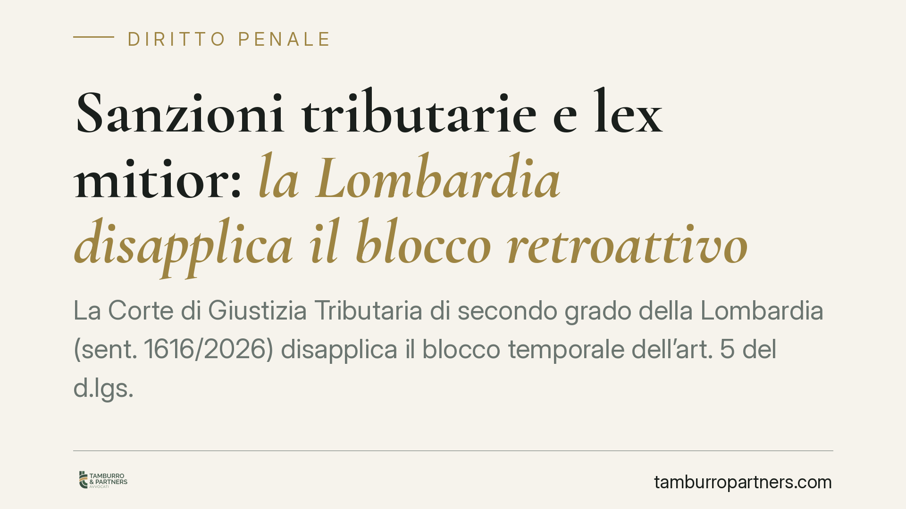

Sanzioni tributarie e lex mitior: la Lombardia disapplica il blocco retroattivo
La Corte di Giustizia Tributaria di secondo grado della Lombardia (sent. 1616/2026) disapplica il blocco temporale dell'art. 5 del d.lgs. 87/2024 e applica la sanzione più mite del 25% anche alle violazioni anteriori al 1° settembre 2024. Una lettura che valorizza il principio unionale della retroattività della norma più favorevole, ma che apre un contrasto aperto con la Cassazione.

Il fatto
Una società a responsabilità limitata contestava all'Agenzia delle Entrate l'applicazione della sanzione del 30% su un omesso versamento commesso prima del 1° settembre 2024. La riforma del sistema sanzionatorio tributario (d.lgs. 87/2024) ha ridotto quella sanzione al 25%, ma con un limite: l'art. 5 stabilisce che le nuove misure si applicano solo alle violazioni commesse a partire da quella data.
La Corte di Giustizia Tributaria di secondo grado della Lombardia ha disapplicato quel blocco temporale, estendendo la sanzione più favorevole anche al periodo precedente. Il fondamento non è nazionale, ma sovranazionale.
Inquadramento normativo
Il nodo è il rapporto tra il diritto interno e il principio della *lex mitior*, cioè della legge successiva più favorevole. Nel diritto penale l'art. 2 c.p. impone di applicare retroattivamente la norma più mite. Nel diritto tributario la regola è più incerta, perché le sanzioni amministrative tributarie hanno natura ibrida.
La Corte lombarda ha ancorato la decisione all'art. 49 della Carta dei diritti fondamentali dell'Unione europea (CDFUE), che consacra il principio della retroattività della sanzione più lieve, e all'art. 7 CEDU, come interpretato dalla Corte di Strasburgo nella nota sentenza *Scoppola*. Secondo i giudici, quando la sanzione tributaria ha carattere sostanzialmente punitivo, essa ricade nella nozione autonoma di "materia penale" e beneficia delle garanzie unionali. Da qui la disapplicazione dell'art. 5 del d.lgs. 87/2024 per contrasto con il diritto UE.
È una tecnica precisa: il giudice nazionale non annulla la norma interna, ma la lascia "non applicata" nel caso concreto, in forza del primato del diritto dell'Unione.
Perché la decisione è controversa
La pronuncia si colloca in rotta di collisione con l'orientamento della Corte di Cassazione, che ha finora escluso l'applicazione retroattiva automatica delle sanzioni tributarie riformate, valorizzando la scelta del legislatore di fissare uno spartiacque temporale.
A ciò si aggiunge la posizione della Corte Costituzionale, che sul punto ha mantenuto una riserva di giudizio, senza affermare un obbligo generale di retroattività della sanzione tributaria più mite. Il quadro, dunque, è tutt'altro che stabilizzato.
La parola potenzialmente decisiva spetta alla Corte di Giustizia UE: un rinvio pregiudiziale potrebbe chiarire se e in quali limiti l'art. 49 CDFUE imponga di superare il blocco temporale nazionale.
Implicazioni pratiche
Per i contribuenti con contenziosi pendenti su violazioni anteriori al 1° settembre 2024, la sentenza apre uno spazio difensivo concreto: la differenza tra 30% e 25% non è trascurabile e, su importi rilevanti, incide in modo significativo.
Va però messa in guardia da facili entusiasmi. Si tratta di una pronuncia di merito, non di un principio consolidato. Un giudice diverso può discostarsene, e la Cassazione resta su posizioni più rigide. Chi imposta una difesa su questa linea deve mettere in conto un esito incerto e la possibilità di dover coltivare il giudizio fino ai gradi superiori.
Sul piano operativo, la tesi è spendibile soprattutto per le sanzioni non ancora definite: accertamenti impugnati, giudizi pendenti, atti non divenuti definitivi. Per le posizioni già chiuse con acquiescenza o definizione agevolata lo spazio è, di regola, precluso.
Cosa fare in concreto
- Verificate la data della violazione. La linea difensiva riguarda solo le condotte anteriori al 1° settembre 2024 con sanzione al 30%.
- Controllate lo stato dell'atto. Se l'accertamento non è definitivo o il giudizio è pendente, valutate di eccepire l'applicazione della sanzione più mite.
- Costruite l'eccezione sul diritto UE. Richiamate espressamente l'art. 49 CDFUE e l'art. 7 CEDU, non la sola normativa interna.
- Considerate il rinvio pregiudiziale. Nei casi di maggior valore, valutate di sollecitare il giudice a interpellare la Corte di Giustizia UE.
- Ponderate il rischio. Data la contrarietà della Cassazione, mettete in conto un contenzioso lungo e dall'esito non garantito.
Contributo informativo a cura di Tamburro & Partners - Avv. Giuseppe Tamburro. Non costituisce parere legale.
Ogni condominio ha una storia a sé.
Se gestisci un'amministrazione e vuoi un confronto su una specifica questione condominiale, scrivi allo studio. Ti rispondiamo entro un giorno lavorativo.